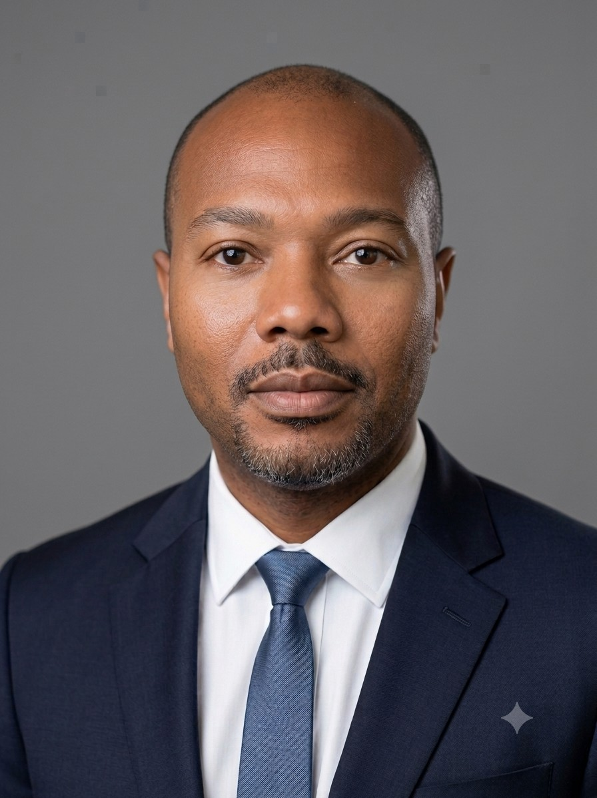

Federal Infrastructure & Facilities Engineering | Electrical Engineering | Veteran
View My ResumeHello, my name is Antoine Davis. I am a General Engineer with experience supporting Department of Defense construction, infrastructure, and facilities improvement programs. I currently support federal infrastructure and facilities engineering projects involving project planning, engineering design review, contractor coordination, budgeting, and facilities compliance.
I earned a Bachelor of Science in Electrical and Electronics Engineering Technology from ECPI University and I am currently pursuing a Master of Science in Electrical Engineering at Old Dominion University. My interests include electrical engineering, infrastructure modernization, cybersecurity, data analytics, and emerging technologies.
Department of the Air Force – 733 CES
Managed engineering coordination and project execution activities for federal construction and infrastructure initiatives valued at approximately $2.5 billion.
Marine Systems Corporation
Developed engineering drawings using AutoCAD and supported RF systems, radar systems, communications engineering, inspections, design modifications, and technical documentation.
United States Navy
Maintained and calibrated biomedical and electronic equipment while supporting mission-critical operations, troubleshooting, compliance records, and inspections.
Master of Science in Electrical Engineering, In Progress
Bachelor of Science in Electrical & Electronics Engineering Technology
Email: adavis.bset@gmail.com
Location: Carrollton, VA